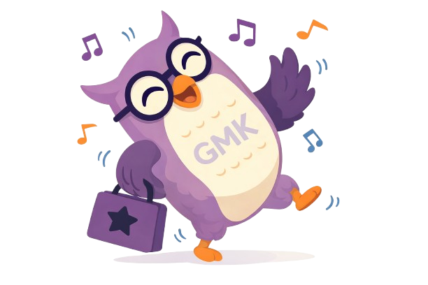

Seguro de Vida
Asegura el futuro financiero de tus seres queridos ante cualquier eventualidad.
Ver más+57 3142772874 Lun-Vie: 8am-6pm
En GMK Seguros analizamos tu situación para ofrecerte la cobertura perfecta entre más de 5 aseguradoras líderes. Asesoría transparente, sin letra pequeña.

Explora nuestras coberturas diseñadas para brindarte tranquilidad en cada etapa de tu vida.
Asegura el futuro financiero de tus seres queridos ante cualquier eventualidad.
Ver másAcceso a la mejor red médica, especialistas y atención prioritaria nacional e internacional.
Ver másApoyo integral y acompañamiento digno para tu familia en los momentos más difíciles.
Ver másCobertura inmediata ante lesiones o imprevistos ocurridos en tu día a día.
Ver másProtege tu vivienda y contenidos contra incendio, robo o desastres naturales.
Ver másGarantizamos el pago de tu renta y servicios públicos para tu tranquilidad como propietario.
Ver másProtección integral para áreas comunes y responsabilidad civil en edificios y conjuntos.
Ver másAsistencia en vía, daños a terceros y cobertura total para tu vehículo particular.
Ver másRodar seguro es tu prioridad. Cobertura contra hurto y accidentes específicos para moteros.
Ver másSeguros para bicicletas eléctricas, scooters y movilidad urbana sostenible.
Ver másProtege a tu empresa frente a daños causados a terceros en el ejercicio de tu actividad.
Ver másGarantiza la ejecución de contratos y obligaciones legales ante tus clientes.
Ver másSoluciones todo riesgo para proteger la infraestructura y operación de tu negocio.
Ver másNuestro proceso
No vendes pólizas, construimos protección. Acompañamos a cada cliente desde el primer diagnóstico hasta la resolución de cualquier siniestro.
Conocemos tu situación personal, familiar o empresarial para entender exactamente qué necesitas proteger y cuál es tu prioridad.
Asesoría gratuitaCotizamos con múltiples aseguradoras —Allianz, MAPFRE, AXA, Bolívar y más— para presentarte un análisis comparativo real.
Multi-aseguradorasTe recomendamos la póliza que equilibra cobertura, precio y respaldo de la aseguradora. Tú tomas la decisión informado.
Mejor relación valorEstamos contigo durante toda la vigencia del seguro. En caso de siniestro, gestionamos el proceso para que solo te preocupes por ti.
Soporte en siniestros